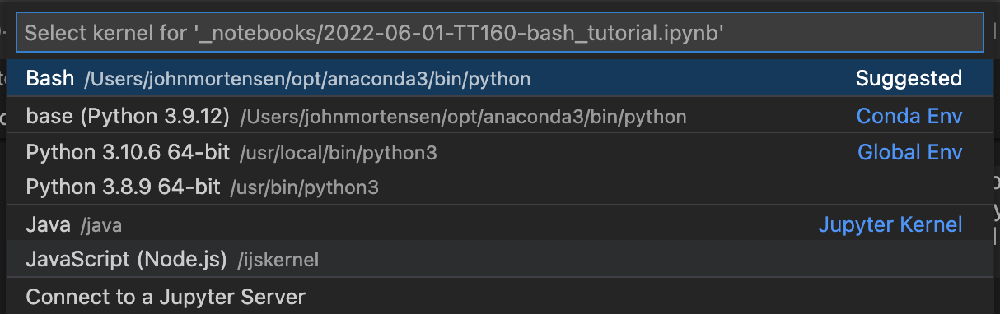

Install the Bash Kernel for Jupyter notebooks. Expectations are pip3 and python3 are defined within the path. The bash shell allowed construction of this tutorial.
pip install bash_kernel
python -m bash_kernel.install
Selecting a kernel in “code –project–” or “jupyter notebook –file.ipynb–” that have bash in options. 
Prerequisites for Project Directory
Practice pulling code from git to your machine. This will create a project directory and add APCSP github project to the directory. There is conditional logic to make sure that directory and pull only happen if it does not (!) exist.
Hack: Change variables, make new directory, clone to that directory.
# echo "Using conditional statement to create a project directory and project"# Variable section# export project_dir=$HOME/vscode # change vscode to different name to test git clone# export project=$project_dir/APCSP # change APCSP to name of project from git clone# export project_repo="https://github.com/nighthawkcoders/APCSP.git" # change to project of choice# cd ~ # start in home directory# # Conditional block to make a project directory# if [ ! -d $project_dir ]# then # echo "Directory $project_dir does not exists... makinng directory $project_dir"# mkdir -p $project_dir# fi# echo "Directory $project_dir exists." # # Conditional block to git clone a project from project_repo# if [ ! -d $project ]# then# echo "Directory $project does not exists... cloning $project_repo"# cd $project_dir# git clone $project_repo# cd ~# fi# echo "Directory $project exists."
SyntaxError: invalid syntax (3397247307.py, line 1)
Look inside Fastpages/Github page project
All computers contain files and directories. The clone brought more files from cloud to your machine. Using the bash shell you will see some commands that show and interact with files and directories.
“ls” lists computer files in Unix and Unix-like operating systems
“cd” offers way to navigate and change working directory
“pwd” print working directory
“echo” used to display line of text/string that are passed as an argument
# You must run cells above to define variable and project# echo "Navigate to project, then navigate to area wwhere files were cloned"# cd $project# pwd# echo ""# echo "list top level or root of files with project pulled from github"# ls# echo ""# echo "list again with hidden files pulled from github"# ls -a # hidden files flag, many shell commands have flags# echo ""# echo "list all files in long format"# ls -al # all files and long listing
# You must run cells above to define variable and project# echo "Look for posts"# export posts=$project/_posts # _posts inside project# cd $posts # this should exist per fastpages# pwd # present working directory# ls -l # list posts
# You must run cells above to define variable and project# echo "Look for notebooks"# export notebooks=$project/_notebooks # _notebooks is inside project# cd $notebooks # this should exist per fastpages# pwd # present working directory# ls -l # list notebooks
# You must run cells above to define notebooks location# echo "Look for images in notebooks, print working directory, list files"# cd $notebooks/images # this should exist per fastpages# pwd# ls -l
Look inside a Markdown File
“cat” reads data from the file and gives its content as output
# You must run cells above to define project# echo "Navigate to project, then navigate to area wwhere files were cloned"# cd $project# echo "show the contents of README.md"# echo ""# cat README.md # show contents of file, in this case markdown# echo ""# echo "end of README.md"
Env, Git and GitHub
Env(ironment) is used to capture things like path to Code or Home directory. Git and GitHub is NOT Only used to exchange code between individuals, it is often used to exchange code through servers, in our case deployment for Website. All tools we use have a behind the scenes hav relationship with the system they run on (MacOS, Windows, Linus) or a relationship with servers which they are connected to (ie GitHub). There is an “env” command in bash. There are environment files and setting files (.git/config) for Git. They both use a key/value concept.
“env” show setting for your shell
“git clone” sets up a director of files
“cd $project” allows user to move inside that directory of files
“.git” is a hidden directory that is used by git to establish relationship between machine and the git server on GitHub.
# This command has no dependencies# echo "Show the shell environment variables, key on left of equal value on right"# echo ""# env
# This command has dependencies on project# cd $project# echo ""# echo "show the secrets of .git"# cd .git# ls -l# echo ""# echo "look at config file"# cat config
Student Request - Make a file in Bash
This example was requested by a student (Jun Lim, CSA). The request was to make jupyer file using bash, I adapted the request to markdown. This type of thought will have great extrapolation to coding and possibilities of using List, Arrays, or APIs to build user interfaces. JavaScript is a language where building HTML is very common.
To get more interesting output from terminal, this will require using something like mdless (https://github.com/ttscoff/mdless). This enables see markdown in rendered format. - On Desktop Install PKG from MacPorts - In Terminal on MacOS - Install ncurses - gem install mdless
Output of the example is much nicer in “jupyter”
# This example has error in VSCode, it run best on Jupyter# cd /tmp# file="sample.md"# if [ -f "$file" ]; then# rm $file# fi# tee -a $file >/dev/null <<EOF# # Show Generated Markdown# This introductory paragraph and this line and the title above are generated using tee with the standard input (<<) redirection operator.# - This bulleted element is still part of the tee body.# EOF# echo "- This bulleted element and lines below are generated using echo with standard output (>>) redirection operator." >> $file# echo "- The list definition, as is, is using space to seperate lines. Thus the use of commas and hyphens in output." >> $file# actions=("ls,list-directory" "cd,change-directory" "pwd,present-working-directory" "if-then-fi,test-condition" "env,bash-environment-variables" "cat,view-file-contents" "tee,write-to-output" "echo,display-content-of-string" "echo_text_>\$file,write-content-to-file" "echo_text_>>\$file,append-content-to-file")# for action in ${actions[@]}; do # for loop is very similar to other language, though [@], semi-colon, do are new# action=${action//-/ } # convert dash to space# action=${action//,/: } # convert comma to colon# action=${action//_text_/ \"sample text\" } # convert _text_ to sample text, note escape character \ to avoid "" having meaning# echo " - ${action//-/ }" >> $file # echo is redirected to file with >># done# echo ""# echo "File listing and status"# ls -l $file # list file# wc $file # show words# mdless $file # this requires installation, but renders markown from terminal# rm $file # clean up termporary file
Hacks
Go back to some of the deployment procedures and think about some thing you could verify through Bash notebook.
Is there anything we use to verify tools we install? Think about versions.
Is there anything we could verify with Anaconda?
How would you update a repository?
Really cool would be automating a procedure from installation.